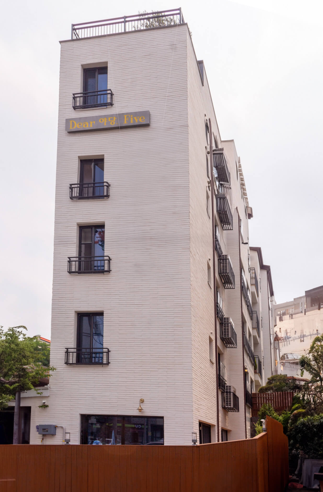

디어 야당 파이브에 오신 것을 환영합니다
"디어 야당 파이브"는 신축 건물 내에 단 다섯 가구만 누릴 수 있는 특별함을 상징하는 이름입니다. 한 층에 한 세대로 이루어져 독립된 공간에서 편리하게 생활할 수 있습니다.
모던 화이트톤 인테리어
각 집 내부의 모든 인테리어 요소는 신중하게 선택되어 모던함과 편안함이 조화롭게 어우러져 있습니다. 깨끗한 흰색 벽은 일상 생활에 편리하며, 빌트인 가구는 전체적인 디자인을 완벽하게 보완하여 스타일 뿐만 아니라 실용성까지 제공합니다.
풀옵션 최신 가전
디어 야당 파이브에는 냉장고, 세탁기와 건조기 등 최신 가전과 주방에 필요한 주요 필수품이 이미 갖춰져 있습니다. 이러한 풀 옵션 최신 가전은 빠른 입주 및 편리한 생활을 도와줄 수 있습니다.
넉넉한 주차장
디어 야당 파이브에서는 각 세대당 전용 주차공간이 1대씩 제공되어 안전하고 편리한 주차공간을 확보할 수 있습니다.
역세권 및 고속도로 인근
디어 야당 파이브에서는 도보 600m, 약 7분 안에 경의선 야당역에 도착할 수 있으며, 차량 이동 시 10분 안에 서울~문산 고속도로로 진입할 수 있어 편리합니다.
미니테라스를 갖춘 높은 층고의 거실
디어 야당 파이브의 거실은 2600mm의 층고를 가지고 있어 편안한 공간감을 제공하며, 2개의 감성 미니테라스와 연결되어 있습니다. 양방향의 창문을 통해 시원한 바람을 느끼거나, 거실 및 각 방에 장치된 시스템 에어컨을 통해 시원한 휴식을 누릴 수 있습니다.
넓은 공간감을 주는 개방형 키친
디어 야당 파이브의 거실은 2600mm의 층고를 가지고 있어 편안한 공간감을 제공하며, 2개의 감성 미니테라스와 연결되어 있습니다. 양방향의 창문을 통해 시원한 바람을 느끼거나, 거실 및 각 방에 장치된 시스템 에어컨을 통해 시원한 휴식을 누릴 수 있습니다.
우리 가족 맞춤 방
디어 야당 파이브의 1001, 1002, 1003호에는 총 3개의 방이 있으며, 1004호에는 5개의 방이 있어 다양한 공간 활용이 가능합니다. 이러한 다양한 방 구성은 자녀의
방이나 오피스 공간 등 가정의 생활 패턴에 맞춰서 활용할 수 있습니다.
복 층: 다락 거실, 다락 방 1, 다락 방 2, 다락 다용도 실, 루프 탑 테라스
워크인 클로젯과 화장실이 있는 편한 안방
디어 야당 파이브의 안방은 빌트인 옷장이 설치되어 있어 별도의 옷장이나 옷방을 구성할 필요 없이 워크인 클로젯에서 손쉽게 의류를 보관할 수 있습니다. 또한, 워크인 클로젯과 연결된 화장실에는 샤워부스가 있어 편리한 이동 경로를 제공합니다.
넉넉한 수납과 다용도실
디어 야당 파이브는 중문을 통해 현관과 거주 공간을 분리하여 안락한 분위기를 조성합니다. 또한 우리 가족의 신발을 넣을 수 있는 넉넉한 신발장과 세탁기 건조기로 이루어진 워시 타워, 그리고 생활용품을 수납할 수 있는 다용도 수납 공간이 마련되어 생활의 편의성을 제공합니다.
거실에 맞닿은 미니 발코니
디어 야당 파이브의 1001, 1002, 1003호에는 각각 2개의 발코니가 있으며, 1004호에는 1개의 발코니가 마련되어 있습니다. 이 특별한 발코니 공간에서는 식물을 키우며 햇빛을 받거나 아침의 상쾌한 공기를 마시며 간단한 커피 한 잔을 즐기며 여유롭고 편안한 순간을 보낼 수 있습니다.
청결하고 모던한 화장실 둘
디어 야당 파이브에는 가장 입구에 화장실 하나와 안방 내에 추가로 하나의 화장실이 있습니다. 두 화장실 모두 샤워 시설이 완비되어 있어 가족 구성원들이 동시에 사용할 수 있어 대기 시간을 최소화할 수 있습니다.

나만의 캠핑장. 야외 우드 데크 및 미니 텃밭 (1001호 특전)
디어 야당 파이브 1001호에는 그 어떤 곳에서도 찾아볼 수 없는 매우 특별한 공간이 자리하고 있습니다. 이 공간은 기역자 형태의 우드 데크와 잔디밭, 그리고 미니 텃밭으로 구성되어 있습니다. 너른 우드 데크에서는 캠핑 의자나 캐노피를 설치하고 휴식을 취하거나, 야외 바베큐를 즐길 수 있으며, 혹은 반려동물 및 아이들과 시간을 보낼 수도 있습니다. 미니 텃밭에서는 원하는 식물과 채소를 가꿀 수 있으며, 잔디밭과 심겨진 수종들은 전원 생활의 즐거움을 제공해줄 것입니다. 1001호에서만 누릴 수 있는 특전인 이 공간을 나만의 도심 속 캠핑장으로 활용해보세요.
나만의 루프탑. 모던한 루프 탑 테라스 및 2층 공간 (1004호 특전)
디어 야당 파이브 1004호는 도심 속에서는 절대 찾아보기 힘든 매우 특별한 2층 공간을 제공합니다. 2층은 2개의 방과 미니 부엌, 화장실, 그리고 넓은 루프 탑 테라스로 구성되어 있습니다. 특히 이중 루프탑 발코니는 파주 운정 신도시의 아름다운 야경과 전망을 즐길 수 있는 매우 특별한 장소입니다. 모던한 화이트톤 타일로 꾸며진 루프탑에서 낮에는 혼자 커피를 마시면서 독서를 해보세요. 밤에는 가족과 친구들과 함께 바비큐 파티를 즐길 수도 있습니다. 또한, 루프탑 테라스 앞에 위치한 다용도 공간은 아래층의 큰 부엌에 오고 갈 필요 없이 간단히 음식을 준비하고 정리할 수 있는 편리함을 제공합니다. 또한 2층의 2개의 방은 생활 공간과 분리된 나만의 공간으로 활용될 수 있습니다. 음악, 미술, 디제잉 등 각종 취미 활동과 관련된 장소, 아이들의 놀이방, 나만의 리모트 근무용 작업실, 서재 등 거주자의 취향과 선택에 따라 2층 공간을 마음껏 활용해보세요.
디어 야당 파이브, 지금 한 번 둘러보세요!
디어 야당 파이브에서는 항상 분양팀이 상주하고 있으며, 언제든지 관심이 있으시거나 문의하실 수 있습니다. 분양팀은 여러분의 궁금한 점에 대답해 드리고, 모델하우스를 통해 더 자세한 정보를 제공해 드릴 수 있습니다. 모델하우스는 실제 디어 야당 파이브의 구조와 가구가 재현된 공간으로, 여러분이 직접 경험하고 느낄 수 있도록 꾸며져 있습니다. 이를 통해 디어 야당 파이브의 생활환경과 시설을 보다 자세히 알아보실 수 있습니다. 문의나 방문 예약은 디어 야당 파이브의 공식 웹사이트나 전화를 통해 가능합니다. 분양팀은 여러분의 방문을 기다리고 있으며, 디어 야당 파이브에 대한 자세한 정보와 설명을 제공해 드리겠습니다.
